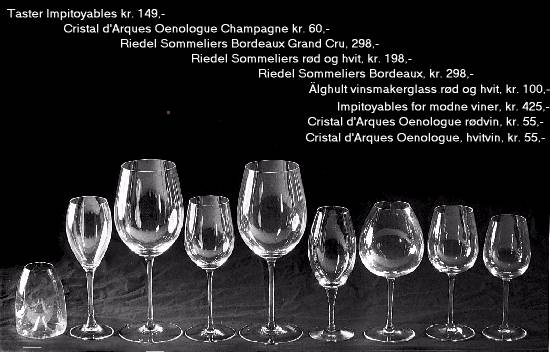

Fedag 15/12 - 1995
Klassisk og best i vinglass

(Foto: Rolf Øhman)
Det er pussig hvor lite hensyn mange glassmakere har tatt til hovedhensikten med vinglasset; at det på best mulig måte skal formidle lukten og smaken av vinen. To hovedkrav gjelder:
1. Glasset skal ha en tulipanform, med innsnevring mot toppen. Dette for å fange inn lukten og konsentrere den.
2. En stor nok "bolle" til at vinen kan skylle rundt og avsette væske langs kanten.
Hvor tykk stetten er og hvor lang stilken bør være, er avhengig av glassets totale utseende og balanse. Blir det for høyt, kan du få et topptungt glass.
Riedel, Impitoyables, Oenologue - dette er vinglassene du skal se etter denne julen. Glem fancy former, farvede glass og klumpete stetter. Disse gir deg alt det du trenger. Østerrikske Riedel er svært bra, men noe dyr. Les Impitoyables er kjennetegnet ved høy pris og ekstrem tulipanform. Oenologue fra Cristal d'Arques er det glasset Aftenposten anbefaler. Det er noe nær perfekt i formen, og det er meget billig. Rundt 50-lappen koster et rødvinsglass fra Oenologue-serien på Bokfinken - en bokhandel i Oslo som har spesialisert seg på vinlitteratur og glass. Eieren, Jacob Opedal, er selv ihuga vinmann, og kjenner produktet også fra vinsiden. Rødvinsglasset fra Oenologue-serien passer også perfekt til hvitvin, så her er det snakk om et ekte kombiglass.